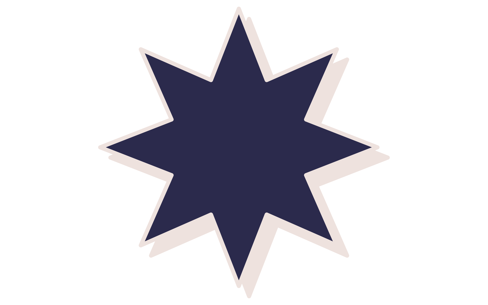

2024 - 2025
About Me
Cristan Icawat
Peace Officer
Handang makinig sa'yo kaibigan, Cristan ang aking ngalan.
- Overall S.Y 2022-2023 With Honors (Grade 10)
- 3rd place STEMazing Science Research Proposal
- 2nd place Best Group Radio broadcasting English
- With Honors (1st sem & 2nd sem of S.Y 2023-2024)
- DSPC Qualifier (Filipino Column Category)